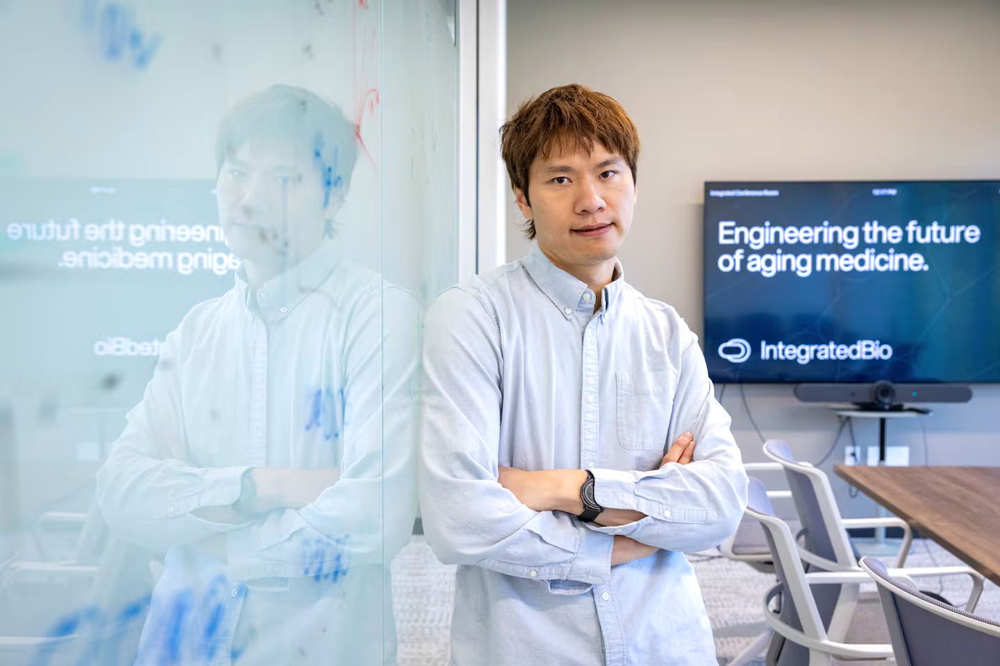

About me
A physicist and mathematician by training, I am co-founder and CEO of Integrated Bio, an aging science company developing multimodal biological datasets and AI for drug discovery, focusing on therapeutics for age-related diseases.
Previously, I was a PI at the Broad Institute of MIT and Harvard, supported by a K25 Mentored Quantitative Research Career Development Award from the NIH, where my lab was among the first to apply AI to drug discovery. Before that, I was a postdoc at MIT and earned my Ph.D. in applied physics from Harvard.

Profiles
Selected Media Coverage
New York Times, Scientific American, The New Yorker, World Economic Forum, NPR, The Washington Post, The Boston Globe, STAT News, MIT Technology Review, Science, Nature, Forbes, BBC, NIH Director's Blog, Fierce Biotech, The Japan Times
Press coverage for individual papers is listed under Publications.